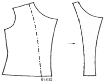

패션머천다이징산업기사 (2017-03-05 기출문제)
1과목: 패션마케팅
1. 리테일 머천다이저의 업무로서 적합한 상품을 적합한 양만 발주하여 최적의 시기에 최적의 장소에서 적절한 가격대로 소비자에게 공급하는 활동은?
- 기획활동
- 정보수집활동
- 사입활동
- 판매활동
(정답률: 56%)

2. 표적시장 선정 시 토대로 할 사항이 아닌 것은?
- 세분시장의 크기와 성장성
- 사용상황
- 경쟁요인
- 기업의 목표와 자원
(정답률: 58%)
3. 소비자의 의사결정 과정에서 외적 탐색 정도를 결정하는 요인이라 볼 수 없는 것은?
- 제품의 특성
- 마케팅 특성
- 개인적 특성
- 상황적 특성
(정답률: 37%)
4. 사회적 책임, 고객만족, 기업이윤이라는 세 가지 측면을 모두 고려하여 균형 잡힌 마케팅 의사결정을 하도록 요구하는 마케팅 관리 철학은?
- 기업중심적 마케팅철학
- 고객중심적 마케팅철학
- 제품중심적 마케팅철학
- 사회지향적 마케팅철학
(정답률: 67%)
5. 시장세분화의 개념과 필요성에 대한 설명으로 틀린 것은?
- 시장 세분화 전략은 전체시장을 세분화한 개개의 시장에서 소비자의 수요에 적응시키는 전략이다.
- 어느 한 상품 또는 상표가 전체시장에 효과적으로 판매되기란 불가능하기 때문에 자사에 유리한 부분시장을 목표로 해야 한다.
- 서로 다른 구매의욕과 필요조건을 가진 구매자군을 식별하는 과정을 의미한다.
- 규모의 경제를 달성하도록, 제품시장 내 가장 공통적인 욕구충족에 마케팅 노력의 초점을 맞추는 것이다.
(정답률: 43%)
6. 패션상품의 가격구조에 영향을 주는 요인이 아닌 것은?
- 디자인 콘셉트
- 디자이너의 명성도
- 패션 사이클
- 판매 방법
(정답률: 66%)
7. 다음 중 표적소비자의 마음속에 기업이 원하는 제품개념을 구축하려는 노력이라고 볼 수 없는 것은?
- 기업은 성능, 디자인 등과 같이 제품의 물리적 특성을 차별화한다.
- 기업은 소비자들과 접촉하는 직원의 선발 및 훈련에 있어서도 많은 노력을 기울인다.
- 기업은 경쟁사들과 똑 같은 이미지와 제품을 만들기 위해 노력을 기울인다.
- 기업은 제품의 서비스에 대하여도 경쟁사와 차별화한다.
(정답률: 73%)
8. 패션머천다이저의 업무수행 타입의 분류 중 젊은이를 대상으로 새로운 감각의 상품을 내놓아 때로는 큰 반응을 일으키며, 계수관리 측면보다 창의성이 우선되고, 논리적인 면보다 감각적인 면이 우선되는 타입은?
- 상인형 머천다이저
- 감각인간형 머천다이저
- 전문관리형 머천다이저
- 생산관리형 머천다이저
(정답률: 70%)
9. 패션산업의 특성으로 틀린 것은?
- 패션산업은 부가가치 산업이다.
- 패션산업은 지식집약 산업이다.
- 패션산업은 정보 산업이다.
- 패션산업은 생산자 지향 산업이다.
(정답률: 63%)
10. 관여도와 구매의사결정방식에 따른 구매행동 유형 중 구매대안을 결정함에 있어 완벽성을 추구하기 위해 포괄적 의사결정을 선호하는 소비자의 구매행동 유형은?
- 다양성 추구형
- 관성적 반복 구매형
- 상표 충동적 구매형
- 고관여 구매형
(정답률: 57%)
11. 다음 중 물적 유통 시스템에 관한 설명으로 틀린 것은?
- 효율적인 물적 유통 관리는 의류업체의 경쟁력 향상과 이윤증대에 크게 영향을 준다.
- 물류란 상품을 생산된 곳으로부터 그것이 쓰여지는 곳까지 효과적으로 옮기기 위해 수행되는 모든 활동을 말한다.
- 물적 유통에는 판매예측, 원부자재 관리, 주문처리, 재고관리, 포장, 운송, 고객서비스 등 포함된다.
- 최근에는 물류의 핵심이 고객 서비스 향상에서 물류 비용을 최소화하는 것에 관심이 집중되고 있다.
(정답률: 48%)
12. 패션 유통경로의 유형 중 위탁판매제도에 대한 설명으로 옳은 것은?
- 의류제조업체가 기획, 생산, 유통을 일괄되게 통제하기 쉽다.
- 상품에 대한 판매와 재고를 점포에서 책임진다.
- 의류제조업체의 상표 이미지 관리가 어렵다.
- 대리점주가 의류업체나 도매시장에 상품을 판매하고 재고도 책임진다.
(정답률: 26%)
13. 패션머천다이징 시스템 단계과정으로 접합한 것은?
- 발상단계→개발단계→제품화단계→평가단계→예비작업단계→시장도입단계
- 발상단계→예비작업단계→제품화단계→개발단계→평가단계→시장도입단계
- 발상단계→평가단계→개발단계→제품화단계→예비작업단계→시장도입단계
- 발상단계→개발단계→평가단계→ 제품화단계→예비작업단계→시장도입단계
(정답률: 23%)
14. 의류상품의 분류 중 TOP별 분류는 마케팅에의 적용 가능성이 가장 높은 것으로 판단된다. 이 때 TPO는 무엇의 약자인가?
- Time, Place, Occasion
- Time, Price, Occasion
- Target, Place, Occasion
- Target, Price, Occasion
(정답률: 52%)
15. 다음 중 패션머천다이징의 개념이 아닌 것은?
- 예측활동
- 상품계획 활동
- 제품화 계획
- 브랜드 정책
(정답률: 61%)
16. 패션머천다이저의 역할에 대한 설명으로 옳은 것은?
- 불특정한 다수의 소비자들에게 그들이 입기를 원하는 디자인을 제공해 줌으로써 미적인 만족을 준다.
- 고객이 원하는 상품을 구해주기도 하고, 고객에게 어울리는 신상품이 출시되면 연락하는 등의 역할을 한다.
- 상품라인의 기획, 소재의 기획 및 수급을 중심으로 생산, 판매부분과의 유기적 관계를 유지하면서 종합적 기획과 계획을 한다.
- 패션산업에 대한 여러 가지 자문을 담당하는 전문가로 어패럴메이커와 유통업 패션정보를 제공하기도 하고 기획 및 마케팅전략에 대한 자문도 한다.
(정답률: 56%)
17. 패션머천다이저가 상품 구색 계획 업무를 할 때 주요 원리로 고려하는 사항이 아닌 것은?
- 상품 구색은 경영 의사보다는 소비자 보호정책과 일치하여야 한다.
- 이윤은 상품에 대한 고객 만족의 결과이다.
- 상품 구색은 아이템, 스타일, 가격, 사이즈 등이 적절하게 조합되어야 한다.
- 제품에 대한 이윤 계산은 체계적이고 조직적인 계획의 결과이다.
(정답률: 53%)
18. 어패럴 메이커의 시장 세분화와 마케팅 전략에 대한 설명으로 잘못된 것은?
- 차별적 마케팅 전략 : 자사만의 독특한 개성이 담긴 상품 및 서비스의 개발
- 비차별적 마케팅 전략 : 소비자의 동일성에 상품개발의 의의를 두는 전략
- 집중적 전략 : 총체적 시장의 점유율을 높이기 위한전략, 최대 다수의 소비자 만족
- 완전 시장 세분화 전략 : 특정 고객 개개인의 기호를 위한 상품의 개발
(정답률: 59%)
19. 제품수명주기 중 성장기에 대한 설명으로 틀린 것은?
- 공격적인 경쟁전략을 구사한다.
- 투자규모를 줄인다.
- 이익률이 상승한다.
- 유사제품이 등장하면서 시장이 확대된다.
(정답률: 60%)
20. 소비자의 관여에 대한 설명으로 틀린 것은?
- 동일한 제품과 상표에 대한 관여의 정도는 같다.
- 제품에 대한 관여는 소비자가 처한 상황에 따라 달라진다.
- 일반적으로 패션제품 중 외출복은 대표적 고관여 제품이며, 일상적인 내의, 양말 등 편의품 저가제품은 저관여로 분류된다.
- 고관여는 제품에 대해 일어나는 각성, 흥미, 집착수준이 높은 내면상태이다.
(정답률: 67%)
2과목: 패션소재기획
21. 소비자가 의류제품을 땀을 흘린 상태에서 일광에 노출되게 착용 후 제품이 변색되었다면 이에 가장 적합한 재현 시험항목은?
- 일광 견뢰도
- 땀 견뢰도
- 일광 및 땀 복합 염색 견뢰도
- 승화 견뢰도
(정답률: 59%)
22. 트리코(tricot)에 대한 설명으로 틀린 것은?
- 가늘고 균일한 실로 제작하여 표면이 매우 매끄럽다.
- 앞면은 평편과 유사하나 이면은 실이 좌우로 진행되어 있다.
- 훼미닌(feminine)한 옷감을 대중화하는데 기여했다.
- 란제리, 셔츠 등에 이용된다.
(정답률: 20%)
23. 다음 중 인피섬유에 해당되지 않는 것은?
- 아마
- 케이폭
- 모시
- 황마
(정답률: 54%)
24. 복고풍의 스타일과 그 시절에 사용되었던 소재들에 대한 관심이 고조되면서 유행하게 된 트렌드는?
- 에콜로지(Ecology)
- 노스텔지어(Nostalgia)
- 에스닉(Ethnic)
- 글로벌(Global)
(정답률: 45%)
25. 패션소재에 사용되는 금사나 은사를 일반적으로 일컫는 말로, 금, 은, 알루미늄 등을 종이에 붙여 이를 가늘게 썰어 놓은 것을 사용하며 럭셔리(luxury)한 느낌을 나타내는 실은?
- 혼섬사
- 중공사
- 라메사
- 스플리트사
(정답률: 41%)
26. 상품 구성, 실(yarn)방향 설정, 시즌별 컬러라인 설정은 소재기획 과정 중 어디에 해당되는가?
- 시생산품 제작 방향
- 패션정보 분석
- 소재기획 콘셉트
- 소재 발주
(정답률: 22%)
27. 작은 무늬를 만들 수 있는 조직으로 직물 전체에 간단하고 작은 기하학적 무늬가 반복되는 것은?
- 파일조직
- 도비조직
- 자카드조직
- 크레이프 조직
(정답률: 34%)
28. 섬유의 염색성에 대한 설명으로 틀린 것은?
- 친수성의 섬유가 염색이 잘 된다.
- 결정과 배향이 발달한 섬유일수록 염색이 잘된다.
- 섬유의 화학적 조성과 내부구조에 의존한다.
- 물에 대한 용해성이 좋은 염료는 염색하기 편리하다.
(정답률: 47%)
29. 다음 중 부가중합체 섬유가 아닌 합성섬유는?
- 아크릴 섬유
- 폴리프로필렌 섬유
- 비닐론 섬유
- 폴리에스터 섬유
(정답률: 20%)
30. 소재경향 분석을 위한 자료수집 시 유의할 사항이 아닌 것은?
- 소재의 새로운 기술 개발 동향
- 판매 및 매장조사를 통하여 소비자가 선호하는 소재 파악
- 소재 거래선의 소재 상품에 대한 안정적인 공급능력 여부
- 국내외 소재전시회에서 전시된 스와치(Swatch) 샘플 입수
(정답률: 52%)
31. 열가소성 물질을 필름으로 제조한 후에 분할하여 평편한 테이프 형태로 만든 후 연신하여 강한 광택의 이미지로 많이 사용되는 실은?
- 테이프사(tape yarn)
- 스플리트사(split yarn)
- 중공사(hollow yarn)
- 인터레이스사(interlace yarn)
(정답률: 33%)
32. 워싱(Washing) 제품의 특징 중 틀린 것은?
- 자연스러운 표면
- 표면의 광택 증가
- 수축에 의한 방축
- 패션성이 있는 소재
(정답률: 51%)
33. 다음 중 펠트(Felt)의 제조원리와 가장 관계가 있는 것은?
- 면의 내알칼리성
- 양모의 축융성
- 견의 드레이프성
- 나일론의 열가소성
(정답률: 61%)
34. 복고풍에서 로맨틱하거나 에스닉한 이미지까지 연출이 가능한 실이지만 주로 홈스펀과 같은 내추럴풍 소재에 많이 사용되는 장식사는?
- 루프(loop)사
- 슬럽(slub)사
- 넵(nep)사
- 나선(spiral)사
(정답률: 26%)
35. 색상과 톤에 따른 색채 이미지의 연결이 틀린 것은?
- 노랑 – 명랑하고 힘찬 느낌
- 주황 – 따뜻하고 활기찬 느낌
- 갈색 – 차갑고 고요하며 평온한 느낌
- 보라 – 우아하고 화려한 예술적 느낌
(정답률: 65%)
36. 단백질 섬유의 공통적인 성질이 아닌 것은?
- 산에 약하다.
- 습윤 시 약해진다.
- 산성염료에 염색이 잘 된다.
- 곰팡이를 포함한 미생물 등에 안전하다.
(정답률: 18%)
37. 소재기획 시 필요한 마케팅 환경정보가 아닌 것은?
- 생태적 환경
- 정치, 법률적 환경
- 지역적 환경
- 기술적 환경
(정답률: 20%)
38. 의류 소재의 쾌적성 중 기공을 통해 공기가 투과할 수 있는 성능을 말하며, 보온성이나 투습성에 큰 영양을 미치는 것은?
- 흡습성
- 흡수성
- 통기성
- 비중
(정답률: 62%)
39. 하이테크한 미래지향적 트렌드에 적합한 소재가 아닌 것은?
- 레이스
- 패딩
- 퀼팅
- 우레탄 백 폼
(정답률: 62%)
40. 미래지향적 이미지를 표출하기 위하여 사용된 소재군이 아닌 것은?
- 미니멀 소재군
- 하이테크 소재군
- 아방가르드 소재군
- 에스닉 소재군
(정답률: 55%)
3과목: 유통관리 및 광고
41. 제품구색계획 시 제품분석법으로 사용되는 ABC분석법에 관한 설명 중 '주력상품'에 관한 관리 방법으로 옳은 것은?
- 구색부족을 방지하고 최적의 수량을 유지한다.
- 유행이 지나간 상품의 경우 과감히 철수 시킨다.
- 신상품일 경우 최소의 재고량으로 소비자 반응을 파악하여 다음 시즌 대비를 한다.
- 주로 유행성이 민감한 제품으로 리오더에 따른 매입한도 예산이 필요하나 상품으로 이에 대비한다.
(정답률: 44%)
42. 라이프사이클에 대한 상품분류에서 계속적으로 팔리고 있으며 매상고가 급상승 중인 상품은?
- 테스트마켓상품
- 러닝상품
- 피크상품
- 슬리핑상품
(정답률: 53%)
43. 윈도우 디스플레이는 분류기중에 따라 매우 다양한 유형으로 나눌 수 있다. 그 중 특정 패션테마와 관련된 다양한 범주의 상품들이 한 공간 안에 스토리형태로 배열되어진 형태를 무엇이라 하는가?
- 릴레이티드 디스플레이
- 프로모셔널 이벤트 디스플레이
- 시리즈 디스플레이
- 싱글 카테고리 디스플레이
(정답률: 44%)
44. 상품구성의 폭과 깊이에 대한 설명 중 틀린 것은?
- 상품구성의 폭은 소비자에게 제공하는 품목수를 말하고, 깊이는 각 품목의 양을 의미한다.
- 소품종 다량구성은 폭이 좁고 깊은 구성을 의미한다.
- 소매점의 경우 상품구성의 폭은 구색을 갖추는 상품의 종류를 의미한다.
- 중류층을 대상으로 하는 점포는 시즌 초에는 폭이 좁고, 깊은 상품구성이 바람직하다.
(정답률: 54%)
45. 유통업계에서 사용하는 용어의 설명이 틀린 것은?
- 프라이빗 브랜드(Private Brand) : 소매점 자체가 상품 기획을 하고 제조를 하여 판매하는 브랜드이다.
- 위탁사입 상품 : 일정 기간 납품업자로부터 판매를 위임 받아 판매에서 재고의 관리 책임까지 유통업체가 담당하는 방법이다.
- 완전사입 : 유통업자가 납품 측으로부터 완전히 구매한 상품으로 악성재고에 의한 리스크를 소매점이 전부 분담하는 방법이다.
- 선주문 : 선적일보다 미리 실시하는 주문으로 바이어는 보다 유리한 가격으로 주문할 수 있다.
(정답률: 27%)
46. 재고상품 중 러닝 스톡(Running stock)에 대한 설명으로 옳은 것은?
- 활발하게 움직이는 상품
- 비교적 잘 팔리는 상품
- 거의 움직이지 않는 상품
- 전혀 움직이지 않고 창고에 들어간 상품
(정답률: 53%)
47. 영업기별 전략 중 도입기 전략과 특성과 거리가 먼 것은?
- 패션트렌드 주장
- 볼륨 전개
- 코디네이트 테마 설정
- 다양한 상품 전개
(정답률: 49%)
48. 광고관리의 의사결정과정에 포함되지 않는 것은?
- 광고목표 설정
- 광고예산 결정
- 표적시장 선정
- 광고매체 선정
(정답률: 41%)
49. VMD의 효과에 대한 설명이 아닌 것은?
- 효과적인 VMD를 위해서는 모든 고객이 되어야 하며, 상품은 연출하는 이의 의도에 따라 다량으로 진열하는 것이 바람직하다.
- VMD는 시각적 요인과 감성적 요인이 크게 작용하므로 인간의 오감에 호소한다.
- VMD는 상품에 정보가치를 부가하고 점포 메시지를 전달하여 이미지를 형성한다.
- VMD는 고객만족의 축으로서 판매환경의 서비스를 개선할 수 있다.
(정답률: 61%)
50. 일용품을 중심으로 상품구성 편리에 따라 판매하여 입지적 편리성이 우선이고 연중무휴로 판매하는 점포의 형태로 빠른 배송시스템 운영을 통한 신속한 상품공급이 우선되는 점포의 유형은?
- 편의점
- 할인점
- 슈퍼마켓
- 패스트푸드점
(정답률: 63%)
51. 패션상품 구성에서 제품의 깊이를 결정하는 요소로 틀린 것은?
- 스타일 수
- 제품계열 수
- 색상 수
- 사이즈 수
(정답률: 51%)
52. 다음 중 패션회사나 소매점이 홍보를 위해 실시하는 구체적인 방법으로 적합하지 않는 것은?
- 신문사 또는 잡지사에 정보를 준다.
- 패션쇼에 기자를 초대한다.
- 각종 매체에 패션관련 지식을 제공한다.
- 직접 광고물을 제작하여 발송한다.
(정답률: 27%)
53. 제조업자, 유통업자, 물류업자 공동으로 기업간 네트워크를 형성하여 정보를 공유함으로써 효율적 유통시스템을 구축하는 것은?
- EOS(Electronic Ordering System)
- EDI(Electronic Data System)
- SCM(Supply Chain Management)
- POS(Point-of –sale)
(정답률: 39%)
54. 리테일 머천다이징의 상품 구매 시 초기 발주 단계의 상품 구색으로 바람직한 것은?
- 상품 구성의 폭은 좁게, 깊이는 깊게
- 상품 구성의 폭은 넓게, 깊이는 깊게
- 상품 구성의 폭은 좁게, 깊이는 얕게
- 상품 구성의 폭은 넓게, 깊이는 얕게
(정답률: 50%)
55. 기업이 광고예산을 결정하는데 있어 고려할 요인에 대한 설명이 틀린 것은?
- 신제품의 경우 소비자들의 인지도를 높이고 시험구매를 자극하기 위하여 상대적으로 많은 광고예산이 소요된다.
- 낮은 시장점유율을 갖고 있는 상표는 높은 시장 점유율을 누리고 있는 상표에 비하여 매출액 대비 광고예산이 높다.
- 경쟁이 치열한 시장에 제품이 속해 있을 경우가 그렇지 않은 경우보다 상대적으로 적은 광고예산이 필요하다.
- 상표간 제품차이가 크게 지각되지 않는 경우, 자사제품이 차별화되어 인식될 수 있도록 광고를 많이 해야 한다.
(정답률: 60%)
56. 개별상품의 매력은 상품의 기능적 매력, 심미적 매력, 상표의 명성, 패션성 등의 상품가치와 무엇을 비교하여 상대적으로 결정되어 지는가?
- 가격
- 입지
- 광고
- 서비스
(정답률: 52%)
57. 리테일 마케팅의 주요 요소에 해당하지 않는 것은?
- 매장, 환경, 시스템, 프로모션 전략
- 상품전략
- 점포전략
- 생산전략
(정답률: 57%)
58. 패션기업들이 개별고객에 대한 신상정보 및 구매 관련 데이터를 얻을 수 있도록 실시하는 제도로 오늘날 데이터베이스 마케팅을 실시하는데 도움이 되는 유통정보 시스템은?
- POS
- 바코드
- 자동발주 시스템
- 자사카드
(정답률: 30%)
59. 다음 중 판매 형태가 다른 소매업은?
- 방문판매
- 인터넷 판매
- 아울렛 판매
- 카달로그 판매
(정답률: 24%)
60. 리테일 머천다이저의 역할 중 구매처 선정 시 고려할 사항이 아닌 것은?
- 상품수준
- 구매습관
- 상품개발
- 품질확보
(정답률: 46%)
4과목: 패션디자인론 및 의복구성학
61. 스커트의 실루엣을 정하여 폭으로 등분한 후 다트를 잘라내어 이어서 만든 스커트로 폭 수에 따라 종류가 나누어지는 것은?
- 스트레이트 스커트
- 고어 스커트
- 플리츠 스커트
- 플레어 스커트
(정답률: 38%)
62. 너비 150cm 옷감으로 프린세스 라인이 들어간 슬림한 실루엣의 긴 소매 원피스 드레스를 재단할 때 옷감량의 계산법으로 가장 적합한 것은?
- (옷길이ⅹ2)+시접(12~16cm)
- (옷길이ⅹ1.2)+소매길이+시접(10~15cm)
- (옷길이ⅹ2)+소매길이+시접(12~16cm)
- 옷길이+소매길이+시접(10cm~15cm)
(정답률: 23%)
63. 안감에 대한 설명으로 틀린 것은?
- 착용 시 미끄러운 성질을 이용하여 쉽게 입고 벗을 수 있도록 한다.
- 구리암모늄 레이온 안감은 마찰에 강하나 흡습성이 적고 대전성이 크다.
- 겉감의 구겨짐을 어느 정도 방지할 수 있다.
- 편물 안감은 신축성이 있는 소재에 사용한다.
(정답률: 40%)
64. 패션 관련 용어의 설명으로 틀린 것은?
- 모드(mode) : 매스패션의 원형이 되는 것이다.
- 매스패션(mass fashion) : 대량생산과 대량마케팅에 의하여 촉진된다.
- 패드(fad) : 채택인구가 급격히 상승하여 유행을 이루다가 곧 쇠퇴하는 수명이 짧은 패션이다.
- 하이패션(high fashion) : 보편화된 이후 상태의 유행이며 패션화의 과정상 후기 단계이다.
(정답률: 54%)
65. 패션전파이론 중 하향전파이론에 대한 설명으로 옳은 것은?
- 패션의 동기를 상하 그룹간의 수직방향에 의해 설명한다.
- 사회 안의 사람들이 공통적인 취향을 갖게 되어 유행이 전파된다.
- 소수민족(흑인, 인디안 등), 청소년 등의 하위집단의 패션이 퍼진다.
- 패션선도자는 모든 계층에 존재하며 패션추종자는 모방을 한다.
(정답률: 40%)
66. 의류 종류별 기본 신체 부위가 옳은 것은?
- 신사복 상의 – 가슴둘레, 허리둘레, 키
- 남성전신용 작업복 – 가슴둘레, 허리둘레, 키
- 여자 청소년 정장 원피스 – 가슴둘레
- 여성 코트 – 가슴둘레, 허리둘레, 키
(정답률: 34%)
67. 래글런 슬리브(Raglan Sleeve)와 같은 패턴 배치법을 사용하지 않는 것은?
- 요크 슬리브
- 드롭 숄더 슬리브
- 기모노 슬리브
- 레그 오브 머튼 슬리브
(정답률: 29%)
68. 다음 중 견본 지시서(샘플 제조지시서)에 나타나지 않은 항목은?
- 원부자재 스와치(Swatch)
- 부자재
- 도식화
- 사이즈 배분(Size assort)
(정답률: 47%)
69. 재단을 위한 준비과정으로서 롤 상태의 천을 평면상으로 여러 겹 포개어 펼쳐 놓은 작업은?
- 마킹
- 검단
- 그레이딩
- 연단
(정답률: 44%)
70. 심지에 대한 설명으로 틀린 것은?
- 편물심지는 신축성이 있다.
- 부직포심지는 드레이프성을 요구하는 경우에는 적합하지 않다.
- 접착심지는 균일한 완성품질을 얻을 수 있다.
- 직물심지는 겉감이 땀이나 더러움, 마모로 손상되는 것을 방지한다.
(정답률: 29%)
71. 그림은 안단의 제도이다. 재단 시 필요한 재료는?

- 겉감
- 겉감, 접착심
- 안감,
- 겉감, 안감
(정답률: 41%)
72. 복식재료에 요구되는 기능 중 피복기능에 해당 되지 않는 것은?
- 방적성
- 신축성
- 가소성
- 경연성
(정답률: 39%)
73. 다음 중 기초봉 중 시접단처리 용도로 사용된 것이 아닌 것은?
- 공그르기
- 바이어스단
- 팔자뜨기
- 새발뜨기
(정답률: 37%)
74. 면적에 따른 배색의 설명 중 틀린 것은?
- 저채도인 색의 면적을 넓게 하고 고채도의 색을 좁게하면 균형이 맞고 수수한 느낌이 든다.
- 저채도인 색의 면적을 좁게 하고 고채도의 색을 넓게하면 매우 화려한 배색이 된다.
- 난색계열 색을 넓게 하고 한색계의 색을 좁게 하면 약간 침울하고 가라앉은 배색이 된다.
- 고명도의 색을 좁게 하고 저명도의 색을 넓게 하면 명시도가 높아 보인다.
(정답률: 48%)
75. 성인 여성복 상의 중 남방셔츠, 캐주얼 셔츠, 캐주얼 블라우스의 기본 신체 부위로만 나열한 것은?
- 가슴둘레
- 가슴둘레, 키
- 가슴둘레, 허리둘레, 키
- 가슴둘레, 엉덩이둘레, 키
(정답률: 28%)
76. 인체측정의 기준점에 대한 설명이 틀린 것은?
- 머리마루점 : 머리수평면을 유지할 때 머리부위 정중선상에서 가장 위쪽
- 목앞점 : 목밑둘레선에서 앞정중선과 만나는 곳
- 겨드랑점 : 겨드랑 접힘선의 가장 아래점
- 뒤통수 점 : 뒤통수뼈 부위 정중선상에서 가장 위쪽
(정답률: 36%)
77. 봉제 후 봉제선이 매끄럽지 않고 원하지 않는 작은 주름이 옷감에 생기는 현상은?
- 퓨징(fusing)
- 프레싱(pressing)
- 퍼커링(puckering)
- 개더링(gathering)
(정답률: 37%)
78. 패션디자인의 요소 중 디테일에 관한 설명 중 틀린 것은?
- 플리츠(pleats) : 주름의 일반적인 명칭
- 스모킹(smocking) : 얇은 천을 바이어스로 재단하여 만든 물결과 같은 리플
- 개더(gather) : 느린 땀으로 박은 봉제 실끈을 잡아당겨서 생긴 잔주름
- 스캘럽(scallop) : 반원형 곡선의 장식
(정답률: 46%)
79. 다음 중 재봉틀 바늘의 굵기가 가장 굵은 것은?
- 16호
- 14호
- 11호
- 9호
(정답률: 38%)
80. 다음 중 옷감의 안과 겉을 구별하는 방법으로 틀린 것은?
- 옷감의 식서 부분이나 단쪽에 문자나 표식이 찍혀 있는 쪽이 안이다.
- 능직으로 짠 모직물의 경우 능선이 오른쪽 위에서 왼쪽 아래로 되어 있는 쪽이 겉이다.
- 날염 옷감은 프린트 문양이 선명한 쪽이 겉이다.
- 첨모직물의 경우는 털이 분명하지 않는 쪽이 안이다.
(정답률: 26%)
5과목: 패션정보분석
81. 소비자 조사에서 조사목적에 가장 적합한 것으로 판단되는 대상을 표본으로 선정하는 방법은?
- 편의 표본추출
- 유의 표본추출
- 할당 표본추출
- 층화 표본추출
(정답률: 26%)
82. 패션마케팅 의사결정을 지원하는 내부정보 시스템에 해당하지 않는 내부정보는?
- 손익계산서
- 리오더 비율
- 대리점 판매실적
- 고객의 구매정보
(정답률: 43%)
83. 소재 정보분석 방법 중 의복과 소재와의 관계를 수량적으로 파악하여 시즌에 따른 변화를 관찰함으로써 시계열적 변화를 파악할 수 있는 것은?
- 느낌에 의한 그룹핑 방법
- 상품조사를 통한 소재경향분석 방법
- 상품조사를 통한 소재패턴경향 분석방법
- 매트릭스 도법에 의한 분석방법
(정답률: 28%)
84. 다음 중 어패럴 메이커에서 정보를 수집하는 목적이라고 할 수 없는 것은?
- 담당 부서의 사업계획 수립에 필요
- 기업 경영전략에 활용
- 신상품의 개발에 필요
- 정보원의 참고자료로 활용
(정답률: 42%)
85. 패션기획도 분류기준에 따라 여러 가지 기획으로 분류할 수 있다. 판매촉진이나 기업홍보, 마케팅 측면에서 각종 행사를 기획, 시행하기 위해 행하는 기획은?
- 제안형 기획
- 답신형 기획
- 신제품개발 기획
- 이벤트 기획
(정답률: 67%)
86. 다음 패션시장에 영향을 주는 환경요인 중 종류가 다른 하나는?
- 노년층 비율의 증가
- 유가 상승
- 공급업체의 부도
- 가족규모의 축소
(정답률: 50%)
87. 경쟁브랜드 조사, 소매점 조사를 통하여 알아낸 정보는 다음 중 어디에 속하는가?
- 마케팅 환경정보
- 패션정보
- 소비자정보
- 시장정보
(정답률: 56%)
88. 다음 중 소비자의 구매실적 정보를 수집하는 데 가장 적합한 방법은?
- QRS
- POS
- POP
- CAM
(정답률: 54%)
89. 다음 중 기업의 외부 정보에 속하는 것은?
- 경쟁업체 매장 동향
- 소비자 조사
- 패션쇼 및 세미나
- 업계 내외의 인맥정보
(정답률: 30%)
90. 패션정보 분석에 있어, 올바른 정보 분석방법이 아닌 것은?
- 통계분석방법
- 추리분석방법
- 상관분석방법
- 추가분석방법
(정답률: 25%)
91. 다음 중 패션정보의 유형과 그 내용에 대한 설명 중 틀린 것은?
- VMD 정보, 광고전략 정보, 판매시스템 정보 등은 판매 및 판촉정보이다.
- 정치, 경제, 사회 및 문화 정보 등은 마케팅 환경정보이다.
- 패션의식, 라이프스타일, 착장경향 등의 정보는 상품정보이다.
- 국내외 패션컬러 정보, 신소재 정보 등은 패션 트렌드 정보이다.
(정답률: 61%)
92. 다음 중 소비자정보에 해당되지 않는 것은?
- 유명 패션 거리 조사
- 구매동기 및 구매패턴 조사
- 상표인지도, 선호도, 보유도 조사
- 라이프스타일 분석
(정답률: 47%)
93. 패션마케팅 조사는 조사목적에 따라 탐색조사, 기술조사, 인과관계조사로 구분된다. 그 중 탐색조사에 대한 설명으로 옳은 것은?
- 조사문제에 대한 통찰력과 아이디어를 얻기 위해 실시한다.
- 표적시장의 프로파일 및 경쟁제품에 대한 소비자의 제품사용과 태도 등에 대한 조사가 이에 해당된다.
- 마케팅변수들 간의 인과관계를 조사하는 것이다.
- 제품가격을 5% 인하 하였을 때 매출액이 그 이상으로 증가할 것인가에 대한 조사가 이에 해당된다.
(정답률: 25%)
94. 패션정보분석에서 시장분석의 주요 내용이 아닌 것은?
- 차기 시즌의 스타일 경향, 컬러 경향, 소재 경향 등에 대한 전반적 흐름을 분석한다.
- 실구매자의 사회 경제적 특성, 구매의사 결정 요인 등을 분석한다.
- 구매의사결정 보류가 또는 상표이동이 가능한 경쟁상표 구매자 등을 잠재 구매자로서 분석한다.
- 경쟁브랜드의 시장점유율, 상품력, 가격구조 등 마케팅 전략 특성을 분석한다.
(정답률: 20%)
95. 패션트렌드 도입 시기의 포착은 사업의 성패에 큰 영향을 미친다. 도입 적기를 판단할 때 고려 해야 할 요소가 아닌 것은?
- 입지의 성숙도
- 고객층의 의식
- 커뮤니케이션 경로
- 현 히트상품의 지속력
(정답률: 30%)
96. 패션 정보를 1차와 2차로 구분할 때, 이에 대한 설명이 옳은 것은?
- 1차 정보는 신속도가 낮다.
- 2차 정보는 생정보라 한다.
- 1차 정보는 정확도가 낮다.
- 2차 정보가 가공정보로 신속도가 높다.
(정답률: 40%)
97. 패션 관련 정보에 대한 설명으로 옳은 것은?
- 소비자 정보 – 매상과 디자인, 소재, 컬러, 가격,상품사이클 분석
- 경쟁 브랜드 정보 – 사회풍속적인 면을 포함하여 새로운 타깃 분석
- 소매점 정보 – 각 브랜드가 타깃으로 하는 소비자의 라이프스타일 분석
- 판매 실적 정보- 지난해 동일 시기의 실적과 비교하여 판매 상품의 차이 파악
(정답률: 58%)
98. 라이프스타일의 분석에 대한 설명이 옳은 것은?
- 미시적 분석 접근방식은 대상 소비자층의 라이프스타일을 알아내어 그 소비자층의 욕구를 파악하는 것이다.
- 미시적 분석 접근방법은 시장세분화와는 무관하다.
- 기업의 마케터들이 라이프스타일 분석을 할 때 대체로 거시적인 방법을 사용한다.
- 행동적 라이프스타일 분석법, AIO 분석법, 태도 조사 분석법 등이 거시적 라이프스타일 분석법에 속한다.
(정답률: 40%)
99. 다음 중 거시적 환경요인에 해당하는 것은?
- 원료 공급자
- 기술
- 소비자와 고객
- 기업이미지
(정답률: 34%)
100. 상품기획 프로세스 중 정보 수집 및 분석과정에 해당하는 것은?
- 이미지 맵 작성
- 패브릭 맵 작성
- 테마 결정
- 경쟁 브랜드 정보 수집
(정답률: 48%)